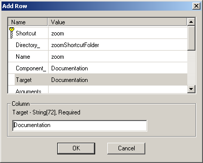

This tutorial extends the basic install to include a shortcut under
the Start / Programs menu to the file
'ZOOM.TXT'.
Open the database with Orca and select the
File table. Locate the file you want to be the
target of the shortcut. For zoom, its 'ZOOM.TXT'.
Each target of a shortcut must be the key path of a component. Our target is in the Documentation component as shown by the Component_ column in the File table. In this example, the Documentation component contains only the shortcut target, so it can be made the keyPath file for the component.
In order to satisfy the rules for shortcuts, you may need to create a new component for the target of the shortcut. If so, perform the following steps:
Display the Component table, and highlight the
KeyPath column and enter ZOOM.TXT's key
from the File table. In this example, the file's
key is 'f1_ZOOM.TXT'.
Now create the shortcut. Display the Shortcut table and add a new row with the following columns, where NULL means that the column is empty.
|  |
The Directory_ column of the shortcut table is an external key into the Directory table. The hierarchical structure of the folders containing shortcuts must be described in the Directory table.
Display the Directory table and enter the following rows:
| Directory | Directory_Parent | DefaultDir |
|---|---|---|
ProgramMenuFolder |
TARGETDIR |
. |
zoomShortcutFolder |
ProgramMenuFolder |
. |
This makes the zoomShortcutFolder be at the same level
as ProgramMenuFolder. In other words, the shortcut will
be placed on the Programs menu itself, not a submenu of Programs. To
place the shortcut in a submenu of the Programs menu, change the
second row above to:
| Directory | Directory_Parent | DefaultDir |
|---|---|---|
zoomShortcutFolder |
ProgramMenuFolder |
Zoom |
This would create a submenu for the shortcut called
Zoom underneath the Programs menu.
Now validate the database to ensure that there are no errors from editing and save the database. The install now includes a working shortcut in the Start / Programs menu. However, if you test this install you'll see that the shortcut lacks an icon in the menu.
Select an icon for your shortcut and save it as an icon (.ICO)
file. We'll extract the icon from notepad and store it in the file
c:\tmp\zoomtxt.ico. Display the Icon table and
add a new row. Enter zoomtxt.ico for the
Name column and for the Data column,
enter the filename c:\tmp\zoomtxt.ico to import the icon
data into the column.
Display the Shortcut table and highlight the
Icon_ column for your shortcut. Edit the value to be
zoomtxt.ico, the key for the new record in the
Icon_ table.
Validate your install once more, correcting any errors resulting from editing.
Save the modified database.
{kind=link}
{kind=link}